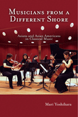

Why do so many Asians devote their lives to playing Western classical music?
Why do so many Asians devote their lives to playing Western classical music?


 Why do so many Asians devote their lives to playing Western classical music?
Why do so many Asians devote their lives to playing Western classical music?

|  |
Musicians from a Different ShoreAsians and Asian Americans in Classical MusicMari Yoshiharapaper EAN: 978-1-59213-333-8 (ISBN: 1592133339) |
�Distinguished Graduate Mentoring Award� from the University of Hawai�i at Manoa, 2007
"An excellent overview of the role that Asians and Asian Americans have come to play in the world of Western classical music. It is beautifully written, extremely lucid, and well researched. What is particularly enlightening here is the author's dedication in seeking out many musicians to interview and her integration of these stories into a coherent whole."
—Timothy D. Taylor, Professor of Ethnomusicology and Musicology, University of California, Los Angeles
Musicians of Asian descent enjoy unprecedented prominence in concert halls, conservatories, and classical music performance competitions. In the first book on the subject, Mari Yoshihara looks into the reasons for this phenomenon, starting with her own experience of learning to play piano in Japan at the age of three. Yoshihara shows how a confluence of culture, politics and commerce after the war made classical music a staple in middle-class households, established Yamaha as the world's largest producer of pianos and gave the Suzuki method of music training an international clientele. Soon, talented musicians from Japan, China and South Korea were flocking to the United States to study and establish careers, and Asian American families were enrolling toddlers in music classes.
Against this historical backdrop, Yoshihara interviews Asian and Asian American musicians, such as Cho-Liang Lin, Margaret Leng Tan, Kent Nagano, who have taken various routes into classical music careers. They offer their views about the connections of race and culture and discuss whether the music is really as universal as many claim it to be. Their personal histories and Yoshihara's observations present a snapshot of today's dynamic and revived classical music scene.
Excerpt available at www.temple.edu/tempress
"Equal parts history, ethnography, memoir, and cultural study, Yoshihara's Musicians from a Different Shore is the book many of us have been waiting for. Not only does Yoshihara ask the right questions about the presence of Asians in the world of classical music, but she also offers stunning insights, the most powerful of which concerns the ways in which Asian musicians have reinvented the Western repertoire."
—Leon Botstein, President of Bard College, and Music Director of the American Symphony Orchestra and the Jerusalem Symphony Orchestra
"Mari Yoshihara shows us how the twain do meet. Western classical music has traveled from its sources on the European continent, to America, and now to Asia�and back. Does a performer�s native language affect the ability to hear or convey music? Can the cultural signification or status of music override artistic values? In her probing new study, Yoshihara considers questions of artistic �authenticity� and cultural and societal conditioning in relation to Asian and Asian American music-makers, revealing much about all of us who are, in our many ways, Musicians from a Different Shore."
—Bruce Brubaker, Faculty, The Juilliard School (1995�2004), Chair, Piano Department, New England Conservatory
"Yoshihara's amalgam of historical, sociological, and ethnographic approaches makes the study unique in the field of music history. This book will resonate with Asian and Asian American musicians or former musicians. Even performers who do not have any Asian connections or background may be interested in this story."
—Judy Tsou, Head of the Music Library, and Lecturer, Music History, University of Washington
"[A] comprehensive cultural, historical and ethnographic study of Asians and Asian-Americans who pursue Western classical music in the United States...[a] probing authoritative survey."
—Publishers Weekly
"Ms. Yoshihara excels at sketching out the biographies of these musicians, who also speak for themselves in large chunks of interviews reproduced verbatim....Their accounts of navigating professional and cultural pitfalls in Asia, Europe, and North America make Musicians a worthwhile purchase for anyone who�s struggled with similar issues of identity, authenticity, and achievement."
—The Far East Review
�[A]n excellent and thoroughly realized new book�what is most remarkable about Yoshihara's study is the precise layering she finds�superbly researched, [Yoshihara] adds vital resonance to this subject.�
—Philadelphia City Paper
"This enlightening and informative book studies music in a social and subjective context. The art of music is here regarded as expression and communication. This multicultural study is highly recommended for students and general readers."
—Multicultural Review
"[Yoshihara] pays particular attention to the role of ethnicity, gender, and social class in the experiences of Asian and Asian American classical musicians in the US�.Summing Up: Recommended."
—Choice
"Musicians from a Different Shore [is] an interesting and insightful read to both the performance scholar and the avid classical music fan."
—E-misferica
"Yoshihara's book is an excellent study�Musicians from a Different Shore is definitive.... [F]or anyone who is serious about the ongoing demographic transformation of classical music, or anyone who is curious about the Asian faces in the symphony hall, this book is a must have...The book has no rival, and it is unlikely to have any."
— Fanfare
"[A] study that deftly combines intellectually rigorous analyses, vivid portrayals of dozens of musicians, both famous and less well-known, and a memoir of a musician-scholar who has personally struggled with the questions she poses to her informants.... Yoshihara contextualizes their answers in larger discourses about race and culture without judgment or condescension."
—Popular Music and Society
"Invaluable.... Yoshihara�s book illuminates the often-ignored and hidden dimensions of classical music�s political economy through extensive interviews with musicians and will be of interest to scholars of oral history eager to understand how unwritten narratives unfold at angles oblique to the written canon of classical music scholarship.... Oral historians will find many parts of this book noteworthy."
—The Oral History Review
Contents:
Preface
Introduction: A Rising Scale in Relative Minor
Chapter 1. Early Lessons in Globalization
Voices
Chapter 2. The Roots and Routes of Asian Music
Chapter 3. Playing Gender
Chapter 4. Class Notes
Voices
Chapter 5. A Voice of One's Own
Conclusion: Musicians First
Acknowledgements
Notes
Selected Biography
Index
About the Author
 | Mari Yoshihara is Associate Professor of American Studies at the University of Hawaii at Manoa. She is the author of Embracing the East: White Women and American Orientalism. |
Music and Dance
Asian Studies
Asian American Studies
© 2015 Temple University. All Rights Reserved. This page: http://www.temple.edu/tempress/titles/1776_reg.html.